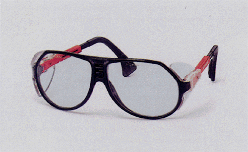
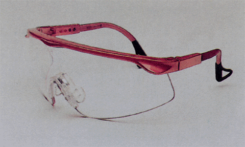
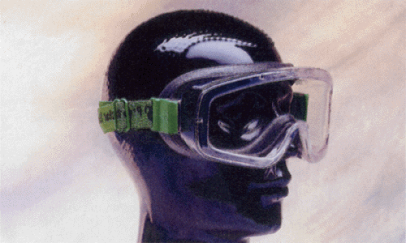
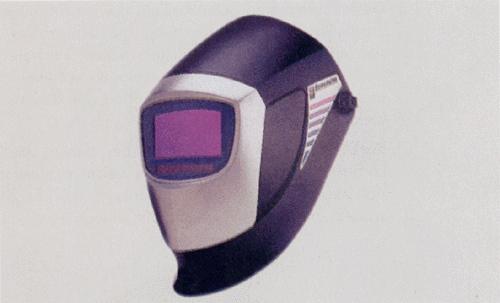
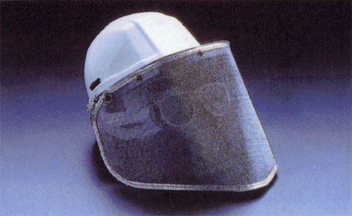
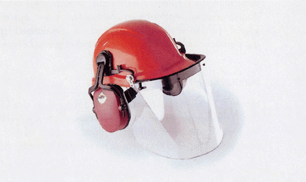

2 |
Begriffsbestimmungen |
||||
| Im Sinne dieser BG-Regel werden folgende Begriffe bestimmt: | |||||
| 1. | Tragkörper sind Teile des Augenschutzes. Sie bestehen aus Fassung, Traghilfen, Verbindungselementen und gegebenenfalls zusätzlichen Erweiterungsteilen. | ||||
| 2. | Traghilfen sind Teile des Tragkörpers, die zum Befestigen am Ohr des Trägers oder z.B. am Schutzhelm dienen. | ||||
| Dies sind z.B. Ohrbügel, Kopfband oder Kopfhalterung, Helmhalterung. | |||||
| 3. | Sichtscheiben ohne Filterwirkung sind farblose Sichtscheiben, d.h. sie haben einen Lichttransmissionswert >74%. | ||||
| 4. | Sichtscheiben mit Filterwirkung (Filtersichtscheiben) sind getönte Sichtscheiben, die je nach Ausführung Schutz gegen ultraviolette, sichtbare (Blendung) oder infrarote Strahlung bieten. | ||||
| 5 | Sicherheitssichtscheiben bieten Schutz gegen aufprallende Teile und bei Stoßbelastung. | ||||
| 6. | Gestellbrillen sind Schutzbrillen, die mit Ohrbügeln oder mit Traghilfen für die Befestigung am Schutzhelm ausgerüstet sein können. Für den seitlichen Schutz sind sie mit Seitenschutzkörben oder Seitenschutzplatten versehen. Sie können außerdem durch geeigneten Aufbau den Augenraum gegen Gefahren von oben schützen. | ||||
 Bild 1: Gestellbrille mit zwei Scheiben (Quelle: UVEX)  Bild 2: Gestellbrille mit einer Scheibe (Quelle: WEGUSTA) |
|||||
7. |
Korbbrillen sind Schutzbrillen, bei denen der Tragkörper korbartig ausgebildet ist und aus weichem, elastischem Material besteht, so dass der Brillenkorb den Augenraum umschließt und sich am Gesicht anschmiegt.  Bild 3: Korbbrille (Quelle: Fondermann) |
||||
8. |
Korrektionsschutzbrillen sind Schutzbrillen – in der Regel Gestellbrillen – die mit Sicherheitssichtscheiben mit optisch korrigierender Wirkung ausgestattet sind. |
||||
| 9. | Vorstecker sind Tragkörper mit Fassungen für Sicherheits- oder Filtersichtscheiben. Sie werden auf eine Korrektionsbrille aufgesteckt. | ||||
| 10. | Schutzschilde sind persönliche Schutzausrüstungen, die Gesicht und Teile des Halses schützen. Sie werden mit der Hand gehalten.  Bild 4: Schweißerschutzschild (Quelle: Hörnell) |
||||
| Beispiel hierfür sind Schweißerschutzschilde, die so groß sein müssen, dass das gesamte Gesicht geschützt wird. Sie bestehen aus lichtdichten, gegen mechanische und thermische Einwirkungen genügend widerstandsfähigen Werkstoffen. Im Schild ist ein Fenster für normale, umschaltbare oder elektrooptische Filter eingearbeitet. Außerdem können sie mit einem Beobachtungsfenster ausgestattet sein, das lichtdicht geschlossen und für bestimmte Arbeitsvorgänge geöffnet werden kann. | |||||
11. |
Schutzschirme/Visiere bestehen aus Traghilfe und Sicherheitssichtscheibe, die Gesicht und je nach Länge und Erweiterungsteilen, z.B. Schürzen, auch Teile des Halses schützen. Sie werden am Schutzhelm oder mit Traghilfen direkt am Kopf getragen. Die Sichtscheiben können an den Traghilfen starr, leicht auswechselbar oder hochklappbar befestigt sein. |
||||
| Schutzschirme können aus | |||||
| − | durchsichtigem Material, z.B. Kunststoff, Drahtgewebe, | ||||
| − | undurchsichtigem Material, z.B. Leder oder Textilien mit flammhemmender Ausrüstung oder einer Oberflächenbeschichtung gegen Strahlungswärme, | ||||
| gefertigt sein. | |||||
 Bild 5: Drahtgewebevisier (Quelle: Fondermann)  Bild 6: Kunststoffvisier (Quelle: Dalloz) |
|||||
12. |
Schutzhauben schützen Kopf und Hals sowie je nach Ausführung auch die oberen Schulterpartien. Sie werden direkt am Kopf oder über dem Schutzhelm getragen. |
||||
| Schutzhauben bestehen in der Regel aus undurchsichtigem Material, z.B. Textilien mit Imprägnierung oder Beschichtung, und sind mit einem Fenster für Sichtscheiben mit oder ohne Filterwirkung ausgestattet. | |||||